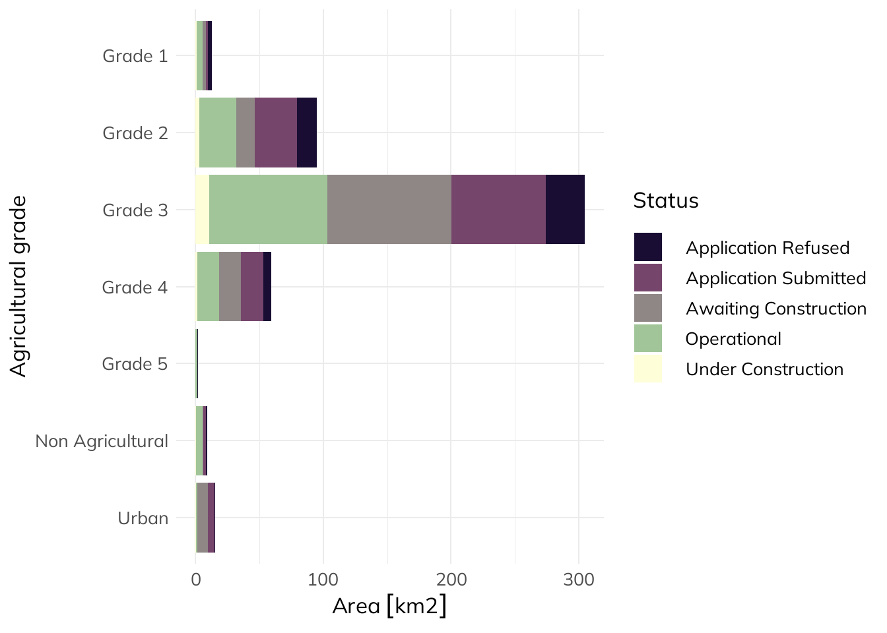

Why pitting solar against food production is a red herring
solar
agriculture
energy
spatial
Author
Seb Dunnett
Published
February 20, 2023
Reviving an old Twitter thread to expedite my first ever blog contribution; as a lifelong environmentalist, I’m a fan of recycling. If you want to check out the original thread, and its total lack of engagement, it’s here.
You might have seen the UK government plans to tighten restrictions for field solar on farmland back in October last year. Although it didn’t go through in the end, the false dichotomy of farming vs solar energy keeps getting peddled. Here’s ITV going all clickbait with “Heating or eating?”. Most commentators I’ve seen use non-spatial figures so I decided to dive into the spatial data to answer the question: has the government “fixed” a non-existent problem?
Note
Caveat: this concerns England only as that’s where the agricultural data covers, but that shouldn’t matter much as 90% of solar is in England (sorry Andy…).
Show/hide code
if (!require(pacman,quietly =TRUE)) install.packages('pacman')library(pacman)pacman::p_load(tidyverse,sf,scico,scales,kableExtra,showtext)font_add_google("Mulish","mulish")# always a useful function to include`%ni%`<-Negate(`%in%`)knitr::knit_hooks$set(inline =function(x) { if(class(x)=="units"&is.numeric(x)){prettyNum(signif(units::drop_units(x),4), big.mark=",") } elseif(is.numeric(x)){prettyNum(signif(x,4), big.mark=",") } else{x} })# British National Gridprj =st_crs(27700)# UK & Eng boundariesuk =st_read("data/uk.json", quiet=TRUE) %>% st_make_valideng =st_read("data/eng.geojson", quiet=TRUE) |>st_make_valid()
Firstly, we need data for solar locations. Back in 2016 when I started my PhD, there were very little spatial data for renewable energy – one of the drivers for my first paper (Dunnett et al. 2020); thankfully it’s not as bad now. I used data from a study that took a similar approach to ours, but with a much more detailed focus on the UK.
Show/hide code
# polygons from Stowell et alsolar =st_read("data/ukpvgeo_geometries.geojson", quiet=TRUE) %>%st_transform(prj)solar_poly_area_km2 =sum(st_area(solar)) %>% units::set_units(km2)# points from Stowell et alsolar_pts =read.csv("data/ukpvgeo_points.csv") %>%drop_na(latitude,longitude) %>%st_as_sf(coords=c("longitude","latitude"),crs=4326) %>%st_transform(27700) %>%filter(located %ni%c("roof","rood","roof`","root")) # couple of spelling mistakes in the datasolar_uk_area_km2 =sum(solar_pts$area_sqm,na.rm=T) %>% units::set_units(m2) %>% units::set_units(km2)solar_uk_pct = solar_uk_area_km2/(sum(st_area(uk)) %>% units::set_units(km2))
Stowell et al. (2020) produced point data with area as an attribute, as well as polygons; the difference between the two was only 2.901 km2. I ended up using areas calculated from the polygons. As most of this debate has centered on ground-mounted solar, I’ve filtered out any roof-mounted. This gave the percentage of land used for solar in the UK as a whopping 0.09697%.
Agricultural grading
So here’s the crux of the issue: agricultural land classification. 1 is best, 5 is worst. In practice, 3 is split into 3a and 3b, but I’m using data from Natural England that annoyingly doesn’t split 3 so we’ll have to make do.
Distribution of agricultural land classification grades in England. Non-agricultural land covers golf course, sports pitches, and public and private parks.
Show/hide code
# summarise by gradealc_summary =st_drop_geometry(alc) %>%group_by(ALC_GRADE) %>%summarise(alc_total_area_sqm =sum(AREA,na.rm = T)) %>%mutate(prop = alc_total_area_sqm/sum(alc_total_area_sqm))# best & most versatile = Grades 1-3abmv_pct =sum(alc_summary[2:4,2])/units::drop_units(st_area(eng))bmv_area_km2 =sum(alc_summary[2:4,2]) %>% units::set_units(m2) %>% units::set_units(km2)
“Best & most versatile” (BMV) refers to the best quality agricultural land: Grades 1-3a. The proposals at the end of last year were to include 3b. Importantly, current planning guidance already favours farming over solar on BMV land.
Grades 1-3 cover 76.55% of England’s area, 99,790 km2.
Show/hide code
# spatially join agricultural grades to solar datasolar_alc =st_join(solar_pts,dplyr::select(alc,ALC_GRADE)) %>%drop_na(ALC_GRADE)# summarise by gradesolar_alc_summary = solar_alc %>%st_drop_geometry() %>%group_by(ALC_GRADE) %>%summarise(solar_total_area_sqm=sum(area_sqm,na.rm = T) %>% units::set_units(m2))%>%left_join(dplyr::select(alc_summary, ALC_GRADE, alc_total_area_sqm),by="ALC_GRADE") %>%mutate(pct = units::drop_units(solar_total_area_sqm/alc_total_area_sqm))# area & pct of solar in Englandsolar_eng_area_km2 =sum(solar_alc$area_sqm,na.rm=T) %>% units::set_units(m2) %>% units::set_units(km2)solar_eng_pct = solar_eng_area_km2/(st_area(eng) %>% units::set_units(km2))# table of ALC grades and % solarsolar_alc_summary %>% dplyr::select(ALC_GRADE,pct) %>%mutate(pct=scales::percent(pct, accuracy=0.001)) %>%rename("Agricultural grade"= ALC_GRADE,"%"= pct) %>% kable %>% kable_styling
Percentage land taken up by ground-mounted solar for each agricultural grade.
Agricultural grade
%
Grade 1
0.277%
Grade 2
0.186%
Grade 3
0.194%
Grade 4
0.161%
Grade 5
0.066%
Non Agricultural
0.125%
Urban
0.010%
Ground-mounted solar infrastructure covers 0.163% of England so it does look like solar is slightly over-represented in higher agricultural classes compared to England on average (see table above), but this is likely exacerbated by obvious constraints such as the tiny percentage of ground-mounted solar in cities (not a surprising finding!). Regardless, these are still tiny proportions: the proportion in Grade 1 translates to 1 km2 in 3,614!
Solar in development
What about future solar developments? For this I had to dive back into the (terrible) Renewable Energy Planning Database (REPD). Serious BEIS, please, please sort it out. They have MW capacities but not areas so I used Dr Simon Evan’s, Carbon Brief’s factchecker extraordinaire, conversion: ~25 acres (0.1 km2 in normal units) per 5 MW.
Show/hide code
# import REPD and fix itrepd =read.csv("data/repd-january-2023.csv", fileEncoding="latin1") %>%mutate(across(X.coordinate:Y.coordinate,as.numeric)) %>%drop_na(X.coordinate,Y.coordinate) %>%st_as_sf(coords=c("X.coordinate","Y.coordinate"),crs=27700) %>%filter(Technology.Type=="Solar Photovoltaics"& Mounting.Type.for.Solar!="Roof") %>%mutate(approx_area_sqm =`Installed.Capacity..MWelec.`*20234.36%>% units::set_units(m2))# spatial join with ALC gradesrepd_alc =st_join(repd,dplyr::select(alc,ALC_GRADE)) %>%drop_na(ALC_GRADE)# summarise by ALC grade and development stagerepd_alc_summary = repd_alc %>%st_drop_geometry() %>%group_by(ALC_GRADE,Development.Status..short.) %>%summarise(total_area_sqm =sum(approx_area_sqm,na.rm=T),total_MW =sum(Installed.Capacity..MWelec.,na.rm=T) %>% units::set_units(MW))# group projects in general construction phaseconstruction =filter(repd_alc_summary, Development.Status..short. %in%c("Awaiting Construction","Under Construction")) %>%group_by(ALC_GRADE) %>%summarise(constr_solar=sum(total_area_sqm,na.rm=T),constr_solar_MW=sum(total_MW,na.rm=T))# group projects in planningplanning =filter(repd_alc_summary, Development.Status..short. %in%c("Application Submitted","Pre-Planning","Revised","Scoping")) %>%group_by(ALC_GRADE) %>%summarise(plan_solar=sum(total_area_sqm,na.rm=T),plan_solar_MW=sum(total_MW,na.rm=T))# total solar area per ALC gradesolar_alc_areas <- solar_alc_summary %>% dplyr::select(ALC_GRADE,solar_total_area_sqm)names(solar_alc_areas) <-c("ALC_GRADE","operating_solar")# join allout <-list(solar_alc_areas,planning,construction,alc_summary[,c("ALC_GRADE","alc_total_area_sqm")]) %>%reduce(left_join) %>%mutate(operating_pct = units::drop_units(operating_solar/alc_total_area_sqm),operatingplus_pct = units::drop_units((operating_solar + plan_solar + constr_solar)/alc_total_area_sqm))# Planned solar in Grade 3# Percentage increaseg3_pre <- out[[3,8]]g3_post <- out[[3,9]]# Area addedarea_added <- units::set_units(out[[3,3]] + out[[3,5]],km2)# GW addedgw_added <- out[[3,6]]/1000
So if every single planned and under construction installation makes it to operation, and that’s a big if looking at the rates of application refusal/withdrawal etc. in the REPD, solar area in Grade 3 would increase from 0.00194% to 0.005128%.
Show/hide code
library(units)showtext_auto()of_interest =c("Application Submitted","Awaiting Construction","Under Construction","Operational","Application Refused")# filter interesting categories to make plot readablerepd_alc_summary =filter(repd_alc_summary, Development.Status..short. %in% of_interest)# colourblind friendly palettepal =scico(palette="tokyo", n=5)# plot solar project area by development phaseggplot(repd_alc_summary %>%mutate(total_area_sqm = units::set_units(total_area_sqm,km2))) +geom_bar(aes(x=ALC_GRADE,y=total_area_sqm,fill=Development.Status..short.), stat="identity") +scale_fill_manual(name="Status",values=pal) +theme_minimal() +ylab("Area") +xlab("Agricultural grade") +theme(text=element_text(family="mulish", size =25)) +coord_flip() +scale_x_discrete(limits=rev)

Solar installations in agricultural grades by operational phase as reported in the REPD.
Had they been banned by Defra, we may have lost out on an extra 200.5 km2 of panels & 5.349 GW of capacity. I’ll let others work out how many houses that could be powering.
And this doesn’t even acknowledge that many of these installations are wanted by the farmers who will indisputably know the land better than any top-down classification.
Also - agrivoltaics people! It’s not a new thing and has been shown to be highly effective for producing multiple benefits across the food-energy-water nexus (Barron-Gafford et al. 2019); eating vs solar heating is a manufactured dichotomy.
Barron-Gafford, Greg A., Mitchell A. Pavao-Zuckerman, Rebecca L. Minor, Leland F. Sutter, Isaiah Barnett-Moreno, Daniel T. Blackett, Moses Thompson, et al. 2019. “Agrivoltaics Provide Mutual Benefits Across the Foodenergywater Nexus in Drylands.”Nature Sustainability 2 (9): 848–55. https://doi.org/10.1038/s41893-019-0364-5.
Dunnett, Sebastian, Alessandro Sorichetta, Gail Taylor, and Felix Eigenbrod. 2020. “Harmonised Global Datasets of Wind and Solar Farm Locations and Power.”Scientific Data 7 (130). https://doi.org/10.1038/s41597-020-0469-8.
Stowell, Dan, Jack Kelly, Damien Tanner, Jamie Taylor, Ethan Jones, James Geddes, and Ed Chalstrey. 2020. “A Harmonised, High-Coverage, Open Dataset of Solar Photovoltaic Installations in the UK.”Scientific Data 7 (1): 394. https://doi.org/10.1038/s41597-020-00739-0.
Citation
BibTeX citation:
@online{dunnett2023,
author = {Seb Dunnett},
title = {UK Solar Versus Agricultural Production},
date = {2023-02-20},
url = {https://sebdunnett.com/posts/2023-02-20-uk-agri-solar/},
langid = {en}
}
![]()